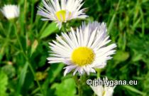

")
 Harms, 1930")
| Phrygana: la Nature en Crète principalement, mais aussi d'ailleurs ... |
|  |
|
|
| Erigeron annuus | Villa hottentotta | Pseudosamanea guachapele |
| Espèces: 1267--- Faune: 510 -- Flora: 733 -- Galles (Bacteria): 2 -- Champignons: 21 -- Lichens: 1 | |||||
| Nouveautés | |||||
| Fauna: | Sympetrum meridionale | Fauna: | Palomena viridissima | Fungi: | Lycoperdon pratense |
| Flora: | Miconia robinsoniana | Fauna: | Spilosoma lubricipeda | Flora: | Plantago lanceolata |
| Flora: | Ornithogalum saundersiae | Flora: | Pilosella aurantiaca | Fauna: | Capnodis cariosa |
| 02 février 2022 |